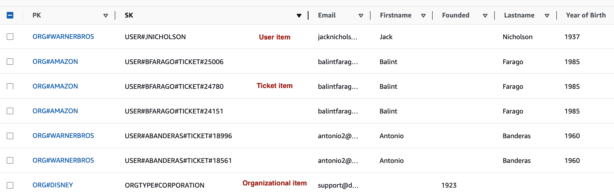
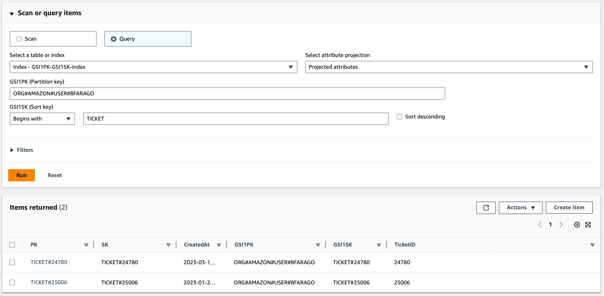

Amazon DynamoDB is a fully managed NoSQL database service that provides fast and predictable performance with seamless scalability.
In this tutorial I will explain how DynamoDB works. This is kind of an in-depth tutorial because DynamoDB is not like the traditional relational databases and it requires a different thinking.
Before you start designing your schema for DynamoDB, come up with the questions it will need to answer first. Understanding the business problems and the application use cases up front is essential.
There are 4 terms that are key to understanding DynamoDB:
DynamoDB stores data in tables, which sounds like tables in relational databases, but they're different. Tables contain items that may have completely different attributes from one another. For example we can store car data in a car table, but we can also store manufacturer data in the same table. You should maintain as few tables as possible in a DynamoDB application. As a matter of fact, one table should be enough.

An item is a group of attributes that is uniquely identifiable among all of the other items. In the example above, an item is a record. Different items can have different attributes. Every item in your table must include the primary key and that primary key must uniquely identify each item in that table. So you can't have 2 items with the same primary key.
Attributes are bits of data, sort of like columns in a relational database (Firstname, Lastname etc.). Here in DynamoDB you don't need to define these upfront, because DynamoDB is schemaless. Schemaless doesn't mean that your database doesn't have a schema, it just means that it's not enforced at the database level. When you create your table, you only need to provide a name for it and create the primary key. Attributes are added at item creation.
Attributes can be a string, a number, a boolean, a list, a map etc.
The example table above had a single primary key. There is another type of primary key, which is called a composite primary key. Every item in your table is stored in a partition. Which partition an item is stored in is determined by the partition key, so DynamoDB doesn't need to query the whole table in order to find a specific record, because the partition key tells it in which partition it should be looking for a specific item. This makes DynamoDB very effective at querying the table. The primary key is either a single partition key or a combination of a partition key and a sort key:
When you're working with DynamoDB, you will use the primary key - either simple or composite - to query the table. You can't really use the attributes with DynamoDB, unlike you would do that with a traditional relational database.
As long as all these people are working at the same company, it's normal to have the username to be unique. But what if we would like to store employees of several companies in a table? This is where the composite primary key helps:
Here the company is the partition key and the username is the sort key. Now we could add another record with username bfarago if we assign Warner Bros as the company to him. Of course, there cannot be 2 employees with the username bfarago working for the same company.
When using a composite primary key generic names for the partition key (PK) and sort key (SK) attribute is recommended. When modelling data in DynamoDB we often try to put as many different entities into a single table as possible. Since these entities are identified by different underlying attributes, it's less confusing to have generic attribute names. E.g. in our table we can store not only employees, but company data, types of elephants or really anything. In case of companies, the partition key may be the company name and the sort key may be the type of company. It wouldn't make sense to refer to those data as company and username, right?
This table now stores 2 different types of items. Because some of the existing attributes do not make sense for companies, I left those empty and added a Founded attribute. In this case, naming PK as primary key and SK as sort key would be the recommended way to go.
Having 2 different types of items in the same table is similar to a JOIN operation in relational databases. In DynamoDB there is no JOIN operation.
In the example below I named the partition key PK and the sort key SK.
If you store different types of items in a table, it may be hard to differentiate between those. If someone's username is LLC, it can either be a username and a company type at the same time. To overcome this, we can use a hashtag to mark which item refers to what. In the table below I use a prefix to mark the items. So USER#BFARAGO refers to a user while ORGTYPE#CORPORATION refers to a company type. Same for ORG#AMAZON. Even if the PK attribute includes organizations only in this example, it's a general pattern to still use a prefix.
Note: though I used all caps you are welcome to use small caps as well, such as ORG#Amazon.
DynamoDB can store complex attributes like maps, lists and sets.
A List type attribute can store an ordered collection of values. Those values can be of different datatypes such as strings or numbers and elements do not have to be of the same type.
A Set is similar to a List, but all elements within a set must be of the same type and they are not stored in any order. For example, an attribute of type Number Set can only contain numbers; String Set can only contain strings; and so on.
Like the List type, the Map type allows you to store a collection of values in a single attribute. For a Map attribute, these values are stored in key-value pairs.
A Query operation fetches one or multiple items that have the same partition key. Whenever you want to query a table, you must specify the exact partition key you're looking for. Since DynamoDB is not a relational database, it does not really know how many records it has in the table, or what each record is about. You can't just tell DynamoDB to give you all the employees that are older than 50, because for such queries, you should use SQL databases. Luckily there is a solution for that.
A secondary index basically copies your data and reshapes it with a new primary key, so you'll virtually get a new table where the Year of Birth is the first column and it is the primary key. You can query based on that secondary index, but you cannot insert or update data in the table based on that.
How can we search for a specific user? Users are listed as a sort key, which means in order to quickly retrieve a user, we'd need to know its author as well as the userid.
So let's add a secondary index to help us answer the query. I've added the attributes GSI1PK as the partition key for the global secondary index and GSI1SK as the sort key. The index itself is just named GSI1. GSI refers to Global Secondary Index. The attribute names that make up the index are very generic again, this allows us to use the GSI for multiple query patterns. You could call these 2 colums however you want, naming them as GSI1PK and GSI1SK is a general practice, because you can easily tell if a table have secondary indexes just by looking at it. In this example just addig a global secondary index with only a primary key would have been sufficient, but I went with a partition and sort key as well and filled it with some generic data, because we might need it later. Note that I did not add a secondary index value to the organizational item because I'm not planning on searching for organizations.
We also need to tell DynamoDB that these 2 new attributes are secondary indexes. Click View table details, select the Indexes tab and click Create index. Provide the names for the keys and click Create index. Wait until the Status of the index becomes Active. It usually takes a couple of minutes.
To query a table against a secondary index, from the table list, we need to select the index instead of the table, because the secondary index reorganized the original table into a new one. So now we have the same data in 2 tables and can search for both organizations and users as well.
Now if you'd like to add a new item to the original table, it will automatically be added to the indexed table as well, if you specify the GSI1PK and GSI1SK attributes.
What if we would like to store an additional type of data in our table? Companies usually have a ticketing system for requesting softwares and permissions. In this case we could change our SK access pattern to USER#BFARAGO#TICKET#3427375, so we would have organizational, user and ticket items linked on an organization. Though this makes sense on paper, but in this case we would need to read more items to access just one, especially because there's gonna be way more tickets than users and organizations. It will work and you can easily tell DynamoDB to give you all the tickets created by a specific user, but in this case it's not the best idea.
Instead, let's initiate the tickets as another PK.
We added some new attributes, GSI1PK and GSI1SK. I added these to the user items and to the ticket items as well. So now with the secondary index we can query the table for a list of all the tickets by a specific user. For the ticket items I put the same value in the PK and the SK columns, because it doesn't really make sense to add something else in the SK column, at least not in this example.
To get a list of all the tickets by a specific user, select the reorganized table for the Query operation. Put ORG#AMAZON#USER#BFARAGO in the GSI1PK field and select Begins with for the Sort key and type TICKET:
You can't search for all tickets in a specific organization in this table. The partition key allows the equality operator only, which means you need tell DynamoDB which exact partition key you're looking for. The sort key allows partial matching with additional operators, such as contains, begins_with, between and a few more.
When you are working with hierarchies, the composite sort key can come very handy. Let's suppose you're a big pharmaceutical company present in lots of countries and you perform different kinds of operations or research in those countries, and in many cases in different cities. If you combine then multiple information, such as state, city, zip code and division into a composite sort key, you can easily tell DynamoDB to give you all the divisions in Arizona state.
If you're used to traditional relational databases, you might ask, why would you want to use a NoSQL database? To answer this question, we need to evaluate the differences between the two.
DynamoDB supports petabytes of data and seamlessly scales up or down, which makes it much faster when it comes to massive amounts of data. Being able to handle 20 million requests per second is much more than what RDS or Aurora is capable of.
If you want to store predictable and structured data, you should use SQL databases.
If a business needs to be ably to quickly read and write large amounts of data, it should always go with DynamoDB. For example, in 2016 Duolingo stored 31 billion items in just one table and executed 24,000 read units per seconds, without breaking a sweat. DynamoDB scales up when they have traffic peaks and scales down off-peak to save money.
Let's assume you regularly want to export large amounts of data, like 1 million records. Though you can do this with DynamoDB, it's much faster to use a relational database for this type of work. This is another example of why coming up with use cases up front is so important before going with a database.
If you're a startup, you don't know how fast you'll find customers and how much data you'll get in a certain period of time. You also don’t know if your idea will succeed. In this case paying for a reserved storage of an SQL database might be an overkill. Furthermore, in case of an explosive growth, a relational database may not be able to serve your needs thus impacting growth and then requiring a painful migration to a NoSQL database, which will ultimately impact the speed of delivering new features.
Though it is a slight difference, if you're building a mission critical application where any outage costs you serious money, DynamoDB offers 99.999% uptime (27 seconds downtime per month) versus 99.99% uptime (4.5 minutes) of Aurora.
Another thing I'd like to mention is the cost of usage. Storing 1TB of data in DynamoDB costs $269/month, while storing the same amount in Aurora costs $110/month. DynamoDB costs $1.34 per 1 million write requests and $0.27 per 1 million read requests, while Aurora costs only $0.21 per million write or read requests. Storing 1TB of data in RDS costs at least $120 per month and Amazon charges $0.11 per 1 million read or write requests. Just by the look of that DynamoDB is much more expensive than the SQL databases. On the other hand, you need to think about what and how much data you are going to store in the database and what access patterns you're going to use for reading and writing data. If that matters, it's simpler to manage DynamoDB and it doesn't require maintenance.
That's the end of this tutorial.